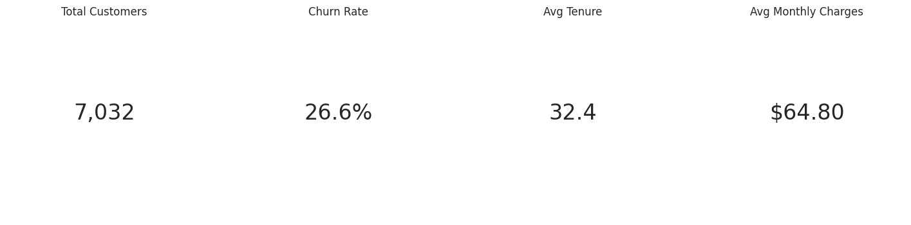
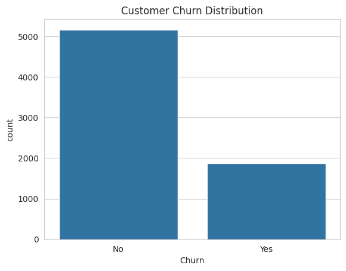
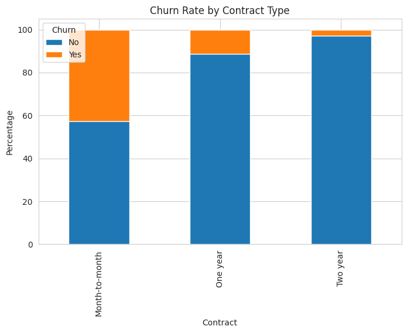
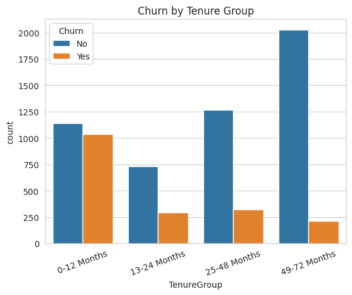
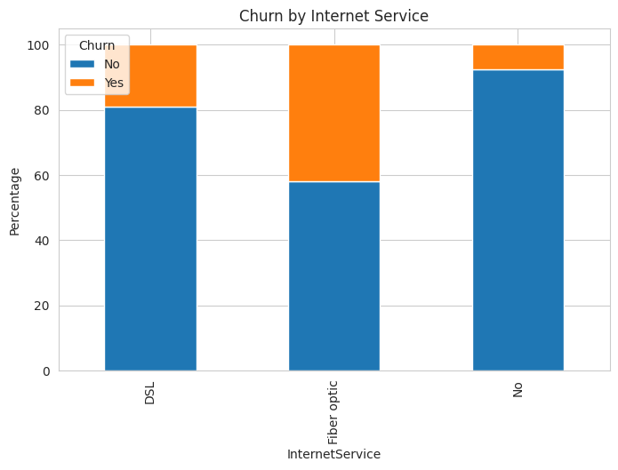

Telco Dataset | 7,032 Customers | Generated: October 2026


73.42% of customers are retained, while 26.58% have churned. This represents 1,869 lost customers.

Month-to-Month customers have 42.7% churn rate. This is 15x higher than Two-Year contracts at 2.85%.

New customers in 0-12 months tenure group are most vulnerable to churn.

Fiber Optic users show significantly higher churn rates. Service quality and pricing should be reviewed.
| Priority | Action | Expected Impact |
|---|---|---|
| High | Incentivize Long-Term Contracts | Reduce Month-to-Month churn from 42.7% |
| High | Onboarding Program for 0-12 Month Customers | Improve retention in vulnerable segment |
| Medium | Review Fiber Optic Pricing Strategy | Address service-specific churn |
| Medium | Retention Campaigns Before Month 6 | Proactive churn prevention |
1. Business Understanding: Identify churn factors and retention strategies
2. Data Understanding: 7,043 records, 21 features. Source: Kaggle Telco Dataset
3. Data Preparation: Cleaned TotalCharges, handled missing values
4. Exploratory Data Analysis: Visualized Contract, Tenure, Charges, and Service impact
5. Insights and Recommendations: Data-driven business actions
Dashboard by Nico Alfianto | Data Source: Kaggle Telco Customer Churn